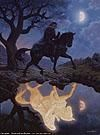

Argrima
Points : 5

Joué par :
Argrima
Joué par :
[ Information masquée ]
Sexe : Homme
Race : Humain
Faction : Alliance
Formation : Prêtre
Niveau : 53
Guilde :
Artisanat 1 : Couturier
Artisanat 2 : Enchanteur
Description : Comme une âme perdue, Argrima arpente les rue de Stormwind en attendant l'heure de sa convocation. La nuit commence à peine à tomber, sur le chemin quelques vendeurs lui proposent des mets aussi divers qu'odorants.
Mais ce soir il n'a pas faim, il sait qu'il vient de prendre la plus grande décision de sa vie. Toute une partie de son être crie à la trahison, mais il est certain que si il ne suit pas ses sentiments, il ne lui restera que le regret jusqu'à la fin de ses jours.
La cloche de la cathédrale se met à sonner, à ses oreilles ce son prend un air de condamnation. Argrima arrive devant la cathédrale, il penche la tête et essai de contrôler le tremblement de ses mains, mais en vain. C'est une partie de lui qui va mourir dans quelques instant et son corps tout entier en est conscient.
D'un geste rapide il essuie les larmes qui montent à ses yeux, puis relève la tête et avance d'un pas pressé. Devant lui se dévoile une petite pièce, trois hommes sont assis en demi cercle, tous richement vêtu. Le plus âgé se lève et prend la parole.
"Argrima nous avons bien compris votre demande, mais nous nous posons tous la même question, avez vous conscience de ce que votre départ implique?"
Argrima sait qu'il n'y a qu'un moyen de couper court à cette conversation, si il laisse les choses traîner, ils vont vouloir lui donner un délai afin de réfléchir, ce qu'il souhaite éviter à tout prix.
Il pose un genoux à terre et proclame d'une voix forte,
"Je suis conscient que je renie ma parole, si c'est ce que vous voulez me faire dire, et je le fait sans regret. Mon seul regret est d'avoir un jour eu l'idée de me mettre aux ordres de l'église."
Argrima relève la tête satisfait, il n'aurait pas eu de meilleur résultat si il les avait giflés. Le vieil homme s'approche de lui au point de lui faire sentir les relents de son haleine et lui dit d'une voix cassé,
"Je vais vous dire sincèrement comment je vois les choses, vos sentiments ne sont qu'un prétexte pour cacher votre lâcheté, je ne suis pas idiot Argrima, je sais que vous connaissez cette femme depuis peu de temps, ceci est votre dernière chance soyez en conscient."
Lâche, le mot résonne dans sa tête pendant un long moment, ses mains tremblent de plus en plus fort, mais cette fois ci ce n'est pas la peur qui les animes mais la fureur. Ces hommes ne connaissent pas les souffrance qu'il à pu endurer, ils ne comprennent pas que la solitude le suit depuis la mort de ses parents et qu'il vient enfin de trouver un échappatoire. D'un geste brusque Argrima se relève et sort sa masse, il avance jusqu'à la table au centre de la pièce et frappe de toutes ses forces laissant une profonde marque.
Les trois hommes reculent et le fixent avec stupeur. Doucement le calme revient dans la pièce. Argrima laisse la masse légèrement enfoncé dans la table et s'adresse au vieil homme,
"Ceci est ma réponse, ma dernière chance je la laisse à quelqu'un d'autre, une personne qui doute d'elle même est faible, j'ai moi même fait preuve de faiblesse pendant un temps, mais c'est désormais fini. Adieu et que la lumière vous garde."
Sans un mot de plus et sans un regard en arrière Argrima quitte la cathédrale.
Enfin le parchemin est arrivé. Argrima commence à le lire fébrilement, dans une écriture déformée quelques phrase lui donnent l'emplacement de celui qu'il cherchait depuis si longtemps.
Irvin le prêtre qui l'a recueillit lorsqu'il était enfant et qui n'a plus donné de nouvelles lorsque Argrima est parti pour Stormwind. Argrima sait qu'il doit à tout pris le retrouver. Il a tant de questions à lui poser, et il souhaite surtout savoir ce qu'Irvin va penser de sa nouvelle vie.
Mais quelque chose ne tourne pas rond, cette écriture ne lui ressemble pas. Argrima décide de repartir pour son village natale afin de questionner quelques personnes. Il parvient aisément à retrouver la petite église et frappe à la porte. Un homme assez jeune vient lui ouvrir.
Argrima l'observe attentivement pendant quelques instant pour vérifier s'il ne le connait pas puis lui dit: "Bonjour je suis Argrima, un ancien élevé du pére Irvin, c'est moi qui vous ai envoyé une lettre demandant des nouvelles du pére."
Le jeune homme recule d'un pas, puis après une certaine hésitation lui répond: "Irvin est parti dans les plaguelands, je ne veut pas être défaitiste mais cela fait de longs mois qu'il n'est pas revenu et je doute de sa survie. Je ne sais pas si vous êtes au courant mais trés peu de gens parviennent à revenir vivants de ces régions contrôlées par le fléau."
Argrima pose sans y réfléchir la main sur la poignée de sa dague.
" Je sais, j'ai entendu quelques récits sur ces régions. Mais je vais quand même partir à sa recherche".
Quelques heures plus tard Argrima parvient à réunir tout l'équipement qui lui sera nécessaire. Le plus long trajet se fera à pied, et malheureusement il lui faudra prendre un griffon pour la fin du voyage.
Finalement après quelques jours Argrima parvient à l'entrée des plaguelands de l'ouest. Le ciel parait plus sombre, une brume constante rend la respiration difficile. Mais le pire reste l'odeur, une odeur de pourriture qui s'imprègne partout. La moindre ration que l'on veut manger prend un goût ignoble. Argrima referme son sac et se relève, il n'a pas envie de s'attarder dans les environs.
A peine à t'il fait quelques pas qu'un rire s'élève de l'autre coté de la route. Un homme à qui il manque une bonne partie du visage s'avance vers lui, un filet de bave dégoulinant de ce qui lui reste comme lèvres.
Pris de panique Argrima recule puis sort sa dague. Le mort vivant ne semble pas apprécier que son repas cherche à se défendre, avec un cris rauque il se précipite pour mordre sa proie. Argrima cherche à l'intercepter avec sa dague, et il y parvient, elle s'enfonce jusqu'à la garde mais ne semble pas gêner la créature.
Alors que la situation semble désespérée Argrima prononce rapidement une prière. Une aura de lumière l'entoure, lui apportant chaleur et réconfort. Le mort vivant surpris tente de le frapper de toute ses force, mais le coup est dévié par cette lumière bienfaitrice.
C'est à ce moment qu'un cris se fit entendre derrière lui.
"Pousses toi donc de la pauvre imbécile".
Argrima se retourne et voit avec la plus grande surprise un nain qui se tient à trois pas de lui. Il porte un fusil qui semble dater de la création du monde en joue. Une détonation se fait entendre. Argrima entend un bourdonnement lui passer juste à coté de l'oreille, et vois avec surprise la tête du mort vivant se séparer de son corps.
Le nain s'avance alors parle avec un accent trés prononcé.
"Alors qu'est ce que tu vient faire par ici? Encore un idiot qui vient voir la tombe d'Uther hein? T'as de la chance que je sois arrivé à temps sinon tu finissais au repas de cette chose."
Argrima fixe le nain droit dans les yeux et lui dit avec fermeté:
"Je me fiche de cette tombe, je suis venu voir le pére Irvin qui vit normalement dans ces terres. Savez vous ou il se trouve?"
Le nain pose son fusil et dit à voix basse:
"Je sais ou il est. Mais à ta place je serais méfiant il y a eu pas mal de problèmes par ici tu peut me croire. Tu vas devoir te rendre au camp proche des ruines d'Andorhal, tu ne peut pas le rater en suivant la route. Moi je te laisse te débrouiller, Irvin était un bon ami mais pas au point que je risque ma vie la bas. Pour tout te dire cela fait quelques jours que l'on ne reçoit plus de nouvelles de ce camp, et tout ceux qui sont partis en prendre ne sont pas revenu."
Sans un mot de plus Argrima reprend la route, puis après quelque heures de marche il parvient au camp. Ce ne sont que quelques maisons en ruines avec une grange qui semble avoir été reconstruite. D'un pas de moins en moins sur, Il s'approche de la grange et ouvre la porte. Une voix s'élève du fond de la grange.
"Mais regardez donc qui vient nous rendre visite, ne serait ce pas Argrima? J'espère que tu nous as apporté de quoi manger. Ne t'en fait pas nous n'allons pas faire les difficiles, même crue la viande que tu as amené à l'air délicieuse."
Sa vision commence à s'habituer à la pénombre et Argrima distingue la personne qui parle, mais il n'a pas le temps d'exprimer sa surprise et sa peur. Un premier coup lui tombe sur l'épaule et lui fracture la clavicule. Le second l'assomme.
La porte de la grange se referme avec douceur. Des bruits de mastications humides s'élèvent de derrière les murs.